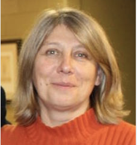
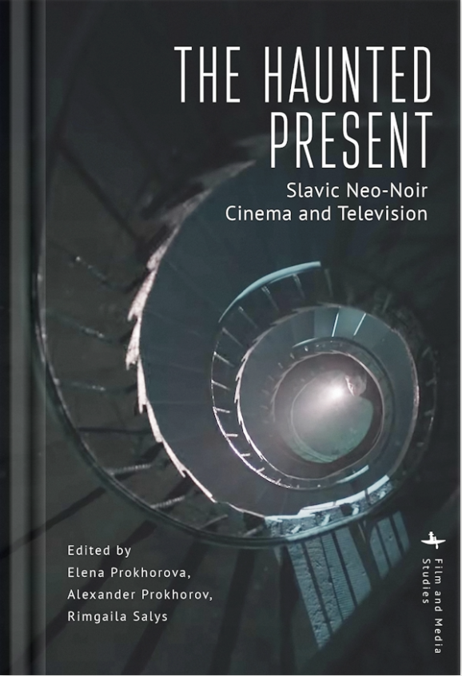
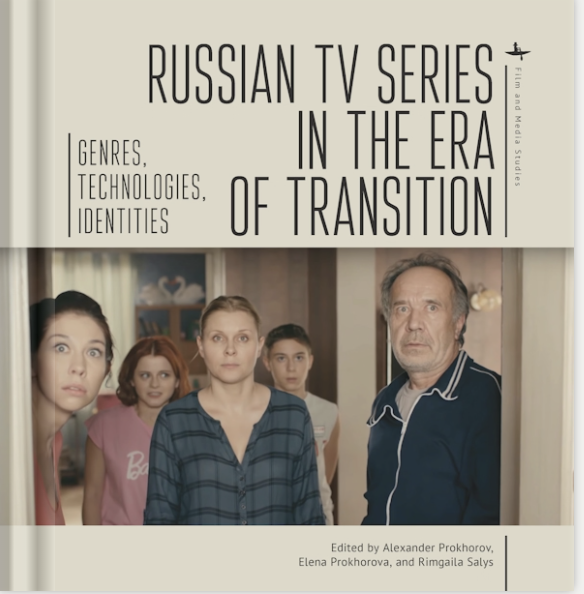
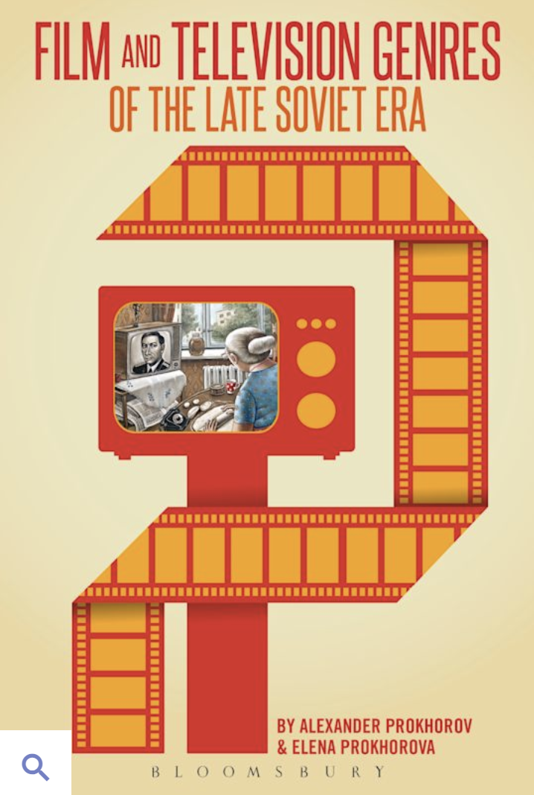

Professor Prokhorova teaches at William & Mary.
She is a scholar of late Soviet and post-Soviet cinema and television, visual representations of national identity, and genre and gender theory.
She teaches courses in Russian language, and Russian literature, culture and media of the 19th, 20th and 21st-century
She also teaches in the Film and Media Studies Program.
Courses I teach:
Recent Publications
|
 |
 |
 |
|---|